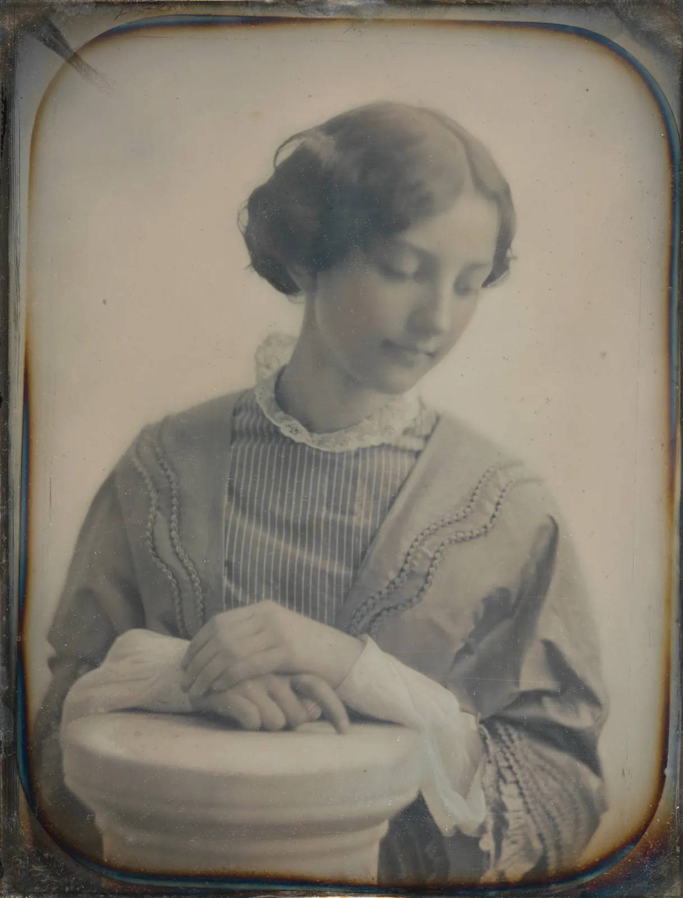
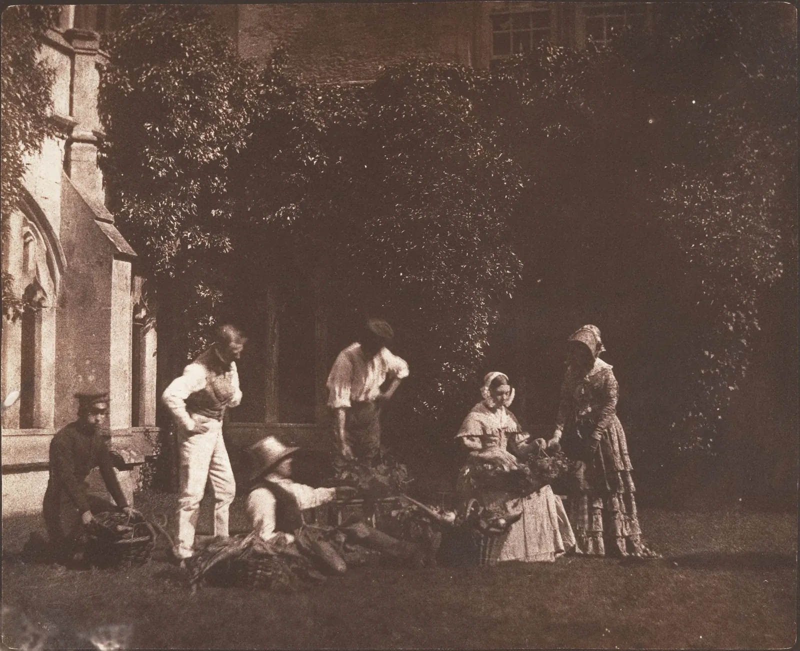

사진의 역사
오래된 사진 속 사람들은 왜 웃지 않을까. 19세기 거리 사진은 왜 텅 비어 있고, 하늘은 왜 하나같이 하얄까. 답의 상당 부분은 사진가의 취향이 아니라 매체의 성질에 있다. 처음 사진 한 장을 얻는 데는 몇 분에서 몇 시간이 걸렸고, 은 화합물은 파란빛에만 반응했고, 한 장의 사진은 복제할 수 없었다. 이 장은 바늘구멍으로 들어온 빛이 벽에 맺히던 때부터 화소로 기록되는 오늘까지, 그 성질들이 하나씩 바뀌어 온 길을 따라간다. 사진은 모두 공공 도메인 자료다.
- 카메라 옵스큐라의 원리와, 바늘구멍의 크기에 최적값이 있는 이유(기하학적 흐림과 회절)를 계산한다.
- 다게레오타입, 칼로타입, 습판, 건판, 롤필름이 각각 무엇을 바꿨는지(유일성과 복제, 선명도, 노출 시간, 휴대성)를 구별한다.
- 노출 시간의 차이를 스톱으로 계산하고, 긴 노출이 움직이는 사람을 지우는 원리를 시뮬레이터로 확인한다.
- 파란빛에만 반응하던 감광 재료가 하늘과 붉은색을 어떻게 기록했는지, 정색·전정색 재료가 무엇을 바꿨는지 본다.
- 컬러와 디지털로 이어지는 변화, 동아시아와 한국에 사진이 들어온 과정, 사진과 그림이 서로를 바꾼 관계를 정리한다.
어두운 방의 상: 카메라 옵스큐라
사진의 역사는 화학보다 광학에서 먼저 시작한다. 캄캄한 방의 벽에 작은 구멍을 뚫으면, 맞은편 벽에 바깥 풍경이 위아래와 좌우가 뒤집힌 채 맺힌다. 이 현상을 이용한 장치를 라틴어로 "어두운 방"이라는 뜻의 카메라 옵스큐라(Camera obscura)라 부른다. 오늘의 "카메라"라는 말이 여기서 나왔다. 바늘구멍 상에 대한 기록은 아주 오래되어, 중국 전국 시대의 『묵경』(Mohist Canon)에 관련 서술이 있다고 흔히 소개되고, 11세기 아랍의 학자 이븐 알하이삼(Ibn al-Haytham)도 광학 책에서 이 현상을 다뤘다.
16세기 이후 유럽에서는 구멍에 렌즈를 끼우고, 상자 모양으로 줄여 들고 다닐 수 있게 만든 카메라 옵스큐라가 화가와 아마추어의 그리기 도구로 퍼졌다. 상 위에 종이를 대고 윤곽을 따라 그리면 원근이 정확한 그림을 얻을 수 있었다. 어떤 화가가 실제로 얼마나 썼는지는 작품마다 논쟁이 이어지고 있어 단정하기 어렵다. 분명한 것은 19세기 초 사람들이 이 상자 안의 아름다운 상을 보며 "따라 그리지 않고 상 자체를 붙잡을 수는 없을까"를 묻기 시작했다는 점이다. 사진은 그 질문의 답이었다.
렌즈 없는 바늘구멍만으로도 상은 맺힌다. 그런데 구멍을 무작정 작게 한다고 계속 선명해지지는 않는다. 구멍이 크면 한 점에서 온 빛이 구멍 크기만큼 퍼져 흐려지고(기하학적 흐림), 구멍이 너무 작으면 빛이 구멍 가장자리에서 휘어 퍼지는 회절(Diffraction) 때문에 다시 흐려진다. 두 흐림이 맞서는 곳에 최적의 구멍 크기가 있다. 영국의 물리학자 레일리 경(Lord Rayleigh)이 19세기 말에 이 문제를 다뤘고, 흔히 쓰는 근사식은 다음과 같다.
바늘구멍의 크기
구멍이 어느 크기든 상은 맺힌다. 문제는 그 상을 오래 남길 방법이었다. 빛에 닿으면 변하는 물질은 이미 알려져 있었다. 18세기에 독일의 요한 하인리히 슐체(Johann Heinrich Schulze)는 은 화합물이 햇빛에 검게 변한다는 것을 실험으로 보였다. 남은 문제는 상을 맺게 하는 것보다 멈추게 하는 것, 곧 빛을 더 받아도 더는 변하지 않게 고정하는 일이었다.
은판 위의 거울: 다게레오타입
지금 남아 있는 가장 오래된 카메라 사진으로 흔히 꼽히는 것은 프랑스의 조제프 니세포르 니엡스(Joseph Nicéphore Niépce, 1765–1833)가 1826년 또는 1827년에 자기 집 위층 창에서 찍은 풍경이다. 빛을 받으면 굳는 역청을 바른 금속판을 썼고, 노출은 적어도 여러 시간, 길게는 며칠이 걸렸을 것으로 추정된다. 그래서 이 사진에서는 해가 건물의 양쪽을 모두 비춘 것처럼 보인다는 설명이 자주 붙는다.
니엡스와 함께 일했던 루이 자크 망데 다게르(Louis-Jacques-Mandé Daguerre, 1787–1851)는 은 화합물로 방향을 바꿨다. 은도금한 구리판을 거울처럼 닦고, 요오드 증기를 쐬어 빛에 민감한 막을 만든 뒤 카메라에서 노출한다. 그다음 수은 증기를 쐬면 눈에 보이지 않던 상이 드러나고(현상, Development), 소금물이나 하이포 용액으로 남은 감광 물질을 씻어 상을 멈춘다(정착, Fixing). 1839년 8월, 프랑스 정부가 이 기술을 사들여 공개하면서 이 방법은 발명자의 이름을 따 다게레오타입(Daguerreotype)이라 불렸고, 몇 달 만에 유럽과 미국으로 퍼졌다.

다게레오타입은 놀랄 만큼 정밀했다. 돋보기로 보면 머리카락 한 올, 레이스의 무늬가 보인다. 대신 세 가지 성질이 있었다. 첫째, 한 장뿐이다. 은판 자체가 사진이라 똑같은 사진을 또 만들 수 없다. 둘째, 좌우가 뒤집혀 있다. 렌즈가 맺은 상을 판에 그대로 받았기 때문이다. 거울이나 프리즘을 렌즈 앞에 달아 바로잡기도 했지만, 대개의 초상은 거울에 비친 모습으로 남았다. 셋째, 거울 같은 표면이라 보는 각도에 따라 상이 양화로도, 음화처럼도 보이고, 긁히기 쉬워 유리를 덮은 작은 상자에 넣어 보관했다.
그리고 노출이 길었다. 1839년 공개 당시 밝은 햇빛에서도 몇 분에서 십여 분이 걸렸다고 전한다. 1840년대 초에 더 밝은 초상용 렌즈(요제프 페츠발, Joseph Petzval의 렌즈가 대표적이다)와 감도를 높이는 약품 처리가 나오며 초상은 수십 초, 좋은 조건에서는 몇 초까지 줄었다. 그래도 미소를 몇 초 동안 유지하기는 어렵고, 사진관에는 목 뒤를 받치는 머리 받침대가 있었다. 옛 초상 속 사람들이 굳은 얼굴인 데는 이런 사정도 있다(당시의 초상 관습, 치아를 드러내지 않는 예절 같은 다른 이유도 함께 거론된다).
노출이 길면 움직이는 것은 사라진다. 다게르가 1838년 무렵 파리의 탕플 대로를 내려다보며 찍은 사진에는 마차와 행인이 오가던 대로가 텅 비어 있고, 구두를 닦던 한 사람과 손님만 남아 있다고 흔히 소개된다. 오래 한자리에 서 있던 사람만 판에 충분한 빛을 남긴 것이다. 아래 시뮬레이터에서 노출 시간을 바꿔 본다.
사라지는 행인
긴 노출은 사진에 시간이 쌓이는 매체라는 성질을 남겼다. 한순간을 자르는 오늘의 사진과 달리, 초기 사진은 몇 분 동안 그 자리에 머문 것만 남긴 기록이다. 이 성질은 지금도 일부러 쓰인다. 삼각대에 카메라를 올리고 몇 초 이상 노출하면 흐르는 물은 안개처럼, 오가는 사람은 흔적처럼 남는다.
종이 음화: 칼로타입과 복제
다게르의 발표 소식에 영국의 윌리엄 헨리 폭스 탤벗(William Henry Fox Talbot, 1800–1877)은 서둘러 자기 연구를 발표했다. 그는 1830년대 중반부터 소금물과 질산은을 바른 종이에 나뭇잎이나 레이스를 얹고 햇빛에 노출해 모양을 남기는 실험을 해 왔다. 이 종이에는 밝은 곳이 어둡게, 어두운 곳이 밝게 맺힌다. 명암이 뒤집힌 이 상이 음화(Negative)다. 음화를 또 다른 감광지 위에 겹쳐 햇빛에 노출하면 명암이 다시 뒤집혀 원래의 명암, 곧 양화(Positive)가 된다.
탤벗은 1840~1841년에 짧은 노출로 생긴 보이지 않는 상을 약품으로 키워 드러내는 방법을 찾아 노출을 크게 줄였고, 이 방법을 칼로타입(Calotype)이라 불렀다. 그리스어로 "아름다운 인상"이라는 뜻이다. 칼로타입의 핵심은 음화 한 장에서 양화를 몇 장이고 뽑을 수 있다는 점이다. 다게레오타입이 한 장뿐인 보석이라면, 칼로타입은 판화처럼 찍어 내는 이미지였다. 탤벗은 1844~1846년에 사진을 직접 붙인 책 『자연의 연필』(The Pencil of Nature)을 여러 권으로 펴냈다. 오늘의 사진 대부분이 따라온 음화–양화 방식은 이렇게 시작됐다.

칼로타입의 상은 다게레오타입만큼 정밀하지 않았다. 음화가 종이라서, 양화를 뽑을 때 빛이 종이 섬유를 지나며 흩어지고 섬유의 얼룩이 함께 찍혔다. 이 부드러움은 단점이자 성격이 되었다. 스코틀랜드의 화가 데이비드 옥타비우스 힐과 사진가 로버트 애덤슨은 1840년대에 이 방식으로 수많은 초상과 어촌 사람들을 찍었는데(11장의 그림 3), 큰 덩어리의 명암으로 읽히는 그 사진들은 흔히 렘브란트의 그림에 견주어 이야기된다. 아래 시뮬레이터에서 같은 장면을 종이 음화와 유리 음화로 찍고 양화로 뽑아 본다. 경계선을 끌면 음화와 양화를 비교할 수 있다.
음화에서 양화로
같은 시기에 사진은 카메라 없이도 쓰였다. 천문학자 존 허셜(John Herschel)이 1842년에 발표한 시아노타입(Cyanotype)은 철 화합물이 빛을 받아 짙은 파란색이 되는 방법이다. 영국의 식물학자 애나 앳킨스(Anna Atkins, 1799–1871)는 해초 표본을 감광지 위에 직접 얹어 햇빛에 노출하는 방식으로, 1843년부터 『영국 해조류 사진』(Photographs of British Algae)을 펴냈다. 사진으로 그림을 대신한 이른 책으로 꼽힌다. 아래 연대표 시뮬레이터에서 그 한 장을 볼 수 있다. 오늘날 건축 도면을 "청사진"이라 부르는 말도 이 파란 인화에서 나왔다.
유리와 습판: 선명함과 하얀 하늘
음화를 종이 대신 투명한 유리에 만들면 섬유의 결이 사라진다. 문제는 감광 물질을 유리에 붙이는 방법이었다. 1851년 영국의 프레더릭 스콧 아처(Frederick Scott Archer)가 발표한 방법은 끈적한 액체인 콜로디온을 유리판에 부어 얇은 막을 만들고, 질산은 용액에 담가 감광시키는 것이었다. 막이 마르면 감도가 떨어지므로 판이 젖어 있는 몇 분 안에 노출하고 현상까지 마쳐야 했다. 그래서 이 방식을 습판(Wet collodion process)이라 부른다. 야외에서 찍으려면 암실 천막과 약품을 마차나 수레에 싣고 다녀야 했다.
그 불편을 감수할 만큼 습판은 좋았다. 다게레오타입처럼 선명하면서 칼로타입처럼 복제가 되고, 노출도 좋은 빛에서 몇 초 수준으로 짧아졌다. 유리 음화는 달걀흰자를 바른 알부민 인화지(Albumen print)와 짝을 이뤄 19세기 후반 사진의 표준이 되었다. 명함 크기의 초상 사진을 한 번에 여러 장 찍는 카르트 드 비지트(Carte de visite)가 1850년대 후반부터 유행하며, 사진은 평범한 사람들도 가질 수 있는 물건이 되었다.
그런데 이 시기의 풍경 사진을 보면 하늘이 대개 아무것도 없이 하얗다. 이유는 감광 물질의 색 감도에 있다. 은 화합물은 본래 파란빛과 자외선에만 반응하고 초록과 빨강에는 거의 반응하지 않는다. 그래서 푸른 하늘은 땅보다 훨씬 빨리 노출되어, 땅에 노출을 맞추면 하늘은 하얗게 날아갔다(3장의 클리핑). 반대로 빨간 옷이나 노란 꽃은 거의 검게 찍혔다.

1873년 독일의 헤르만 빌헬름 포겔(Hermann Wilhelm Vogel)은 감광 물질에 특정한 염료를 섞으면 초록빛에도 반응하게 할 수 있다는 것을 발견했다. 이렇게 파랑과 초록에 반응하는 재료를 정색성(Orthochromatic), 20세기 초에 나온 빨강까지 반응하는 재료를 전정색성(Panchromatic)이라 부른다. 아래 시뮬레이터에서 같은 장면을 세 가지 감광 재료와 사람의 눈으로 비교한다.
무슨 색에 반응하는가
건판과 롤필름: 순간, 그리고 모두의 카메라
습판의 불편을 끝낸 것은 젤라틴이었다. 1871년 영국의 리처드 리치 매덕스(Richard Leach Maddox)가 젤라틴에 은 화합물을 섞어 유리에 바르는 방법을 발표했고, 1870년대 후반에는 공장에서 만든 건판(Gelatin dry plate)을 사서 쓸 수 있게 되었다. 마른 채로 보관했다가 아무 때나 찍고, 현상은 나중에 해도 됐다. 감도도 습판보다 훨씬 높아 노출은 수십 분의 1초 수준으로 내려왔다. 삼각대 없이 손에 들고 찍는 카메라가 이때 나왔다.
짧은 노출은 눈으로 볼 수 없던 것을 보여 주었다. 영국 태생의 에드워드 머이브리지(Eadweard Muybridge, 1830–1904)는 1878년 캘리포니아에서 경주로를 따라 카메라 여러 대를 늘어놓고, 달리는 말이 줄을 끊을 때마다 셔터가 차례로 열리게 했다. 그 사진들은 질주하는 말의 네 발이 한순간 모두 땅에서 떨어진다는 것, 그 순간의 다리는 그림에서 흔히 그리던 것처럼 앞뒤로 뻗은 모양이 아니라 배 아래로 모인 모양이라는 것을 보여 주었다. 그는 이후 펜실베이니아 대학에서 사람과 동물의 움직임 수만 장을 찍어 1887년 『동물의 운동』으로 펴냈다(11장의 그림 4).
마지막 장벽은 기술이 아니라 사람이었다. 사진을 찍으려면 여전히 판을 갈아 끼우고 암실에서 현상할 줄 알아야 했다. 1888년 미국의 조지 이스트먼(George Eastman)은 100장을 찍을 수 있는 감광 띠(롤필름)를 미리 넣은 작은 상자 카메라를 팔았다. 다 찍으면 카메라째 회사로 보내고, 회사는 사진을 뽑아 새 필름을 넣은 카메라와 함께 돌려보냈다. 이 카메라의 광고 문구 "버튼만 누르세요, 나머지는 저희가 합니다"(You press the button, we do the rest)는 사진의 대중화를 상징하는 말로 자주 인용된다. 첫 모델의 사진은 지름 6 cm 남짓한 둥근 모양이었다. 1900년에는 1달러짜리 상자 카메라가 나왔다.
필름이 작아지자 카메라도 작아졌다. 1920년대 중반 독일에서 나온 35 mm 영화 필름용 소형 카메라는 24×36 mm, 곧 3:2 비율의 화면을 표준으로 만들었다. 지금 많은 디지털카메라의 센서가 3:2인 것도, "풀프레임"이라는 말이 36×24 mm 센서를 가리키는 것도 여기서 이어진다(5장).
연대표 위의 노출 시간
—
연대표의 사진: 슈아즐라, 「퐁루아얄 다리 위의 행렬」, 1844, 다게레오타입(크레딧) · 사우스워스 앤드 호스, 「세일럼의 호지스 양」(크레딧) · 탤벗, 「과일 장수들」(크레딧) · 앳킨스, 「스피라이아 아룬쿠스(티롤)」, 1851–54, 시아노타입(크레딧) · 르 그레, 「큰 파도, 세트」(크레딧) · 줄리아 마거릿 캐머런, 「키르케」, 1865, 알부민 인화(크레딧) · 머이브리지, 「움직이는 동물의 자세」, 1879 촬영, 1881 인화(크레딧) · 작가 미상(일본), 「부가쿠 의상을 입은 연기자」, 1880년대, 채색 알부민 인화(크레딧) · 작가 미상(미국), 「아마추어 스냅 사진첩」, 1890–92(크레딧). 모두 메트로폴리탄 미술관 소장, 공공 도메인(The Met Open Access, CC0).
노출 시간의 차이는 스톱으로 세면 감이 온다. 노출이 두 배가 될 때마다 1스톱이므로(2장), 두 노출 시간의 차이는 다음과 같다.
색을 담기
흑백 사진이 퍼진 뒤에도 사람들은 색을 원했다. 가장 먼저 쓰인 방법은 손으로 칠하는 것이었다. 다게레오타입의 볼에 분홍 가루를 얹고, 알부민 인화 위에 수채 물감을 입혔다. 특히 1860년대부터 일본 요코하마의 사진관들은 풍경과 풍속을 찍은 알부민 사진에 섬세하게 색을 칠해 외국인 방문객에게 팔았고, 이런 사진들은 흔히 "요코하마 사진"이라 불린다. 칠하는 일은 우키요에 같은 그림 공방의 손기술과 이어져 있었다고 설명된다. 연대표 시뮬레이터의 1880년대 사진이 그 예다.
빛 자체로 색을 기록하는 방법은 세 원색으로 나누어 찍는 생각에서 나왔다. 스코틀랜드의 물리학자 제임스 클러크 맥스웰(James Clerk Maxwell)은 1861년 빨강·초록·파랑 필터로 따로 찍은 세 장을 같은 필터로 겹쳐 비추어 색을 재현하는 시연을 했다. 빛의 가법 혼색(ColorBook 4장)을 사진에 쓴 것이다. 처음으로 널리 팔린 컬러 사진 재료는 프랑스의 뤼미에르 형제가 1907년에 내놓은 오토크롬(Autochrome)이다. 주황·초록·보라로 물들인 감자 전분 알갱이를 유리판에 촘촘히 뿌려 수백만 개의 작은 색 필터로 쓰는 방식이라, 확대하면 점묘화처럼 알갱이가 보인다(병치 혼색). 대신 필터가 빛을 많이 먹어 노출이 흑백판보다 훨씬 길었다.
1930년대 중반에는 한 장의 필름 안에 파랑·초록·빨강에 각각 반응하는 얇은 층을 겹친 다층 컬러 필름이 나왔고, 20세기 후반에는 컬러 사진이 일상이 되었다. 다만 컬러 필름과 인화지의 염료는 시간이 지나며 서로 다른 속도로 바랜다. 1970~1980년대의 가족 사진이 한쪽 색으로 쏠려 붉거나 누렇게 보이는 일이 흔한 이유다. 흑백 은 사진이 백 년 넘게 버티는 것과 대조적이다.
화소로: 디지털 사진
디지털 사진의 출발점으로는 흔히 1969년 미국 벨 연구소의 윌러드 보일(Willard Boyle)과 조지 스미스(George E. Smith)가 고안한 전하 결합 소자, 곧 CCD(Charge-coupled device)가 꼽힌다. 빛을 받은 칸마다 쌓인 전하를 차례로 옮겨 읽어 내는 소자로, 두 사람은 이 업적으로 2009년 노벨 물리학상을 받았다. 1975년 미국 코닥의 엔지니어 스티븐 새슨(Steven Sasson)은 CCD로 100×100 화소, 곧 1만 화소의 흑백 사진을 찍어 카세트테이프에 기록하는 시제품을 만들었는데, 한 장을 기록하는 데 20초 남짓 걸렸다고 전한다.
1990년대에 화소마다 증폭기를 둔 CMOS 이미지 센서가 실용화되며 센서는 싸고 작고 전력을 덜 쓰게 되었다. 2000년 무렵 휴대폰에 카메라가 들어갔고, 2010년대에는 휴대폰이 세계에서 가장 많이 쓰이는 카메라가 되었다. 오늘의 휴대폰은 셔터를 한 번 누를 때 여러 장을 찍어 합치고(3장의 HDR), 배경을 계산으로 흐리고(7장), 색을 자동으로 맞춘다(9장). 은 결정이 빛을 받아 적던 일을, 화소와 계산이 함께 하는 셈이다. 센서가 빛을 숫자로 바꾸는 과정은 8장에서 자세히 다뤘다.
| 방식 | 시기 | 상이 맺히는 곳 | 복제 | 밝은 날 노출(대략) |
|---|---|---|---|---|
| 헬리오그래피 | 1820년대 | 역청을 바른 금속판 | 불가 | 여러 시간~며칠(추정) |
| 다게레오타입 | 1839~1850년대 | 은도금 구리판(양화, 좌우 반전) | 불가 | 수 분 → 수십 초 |
| 칼로타입 | 1841~1850년대 | 종이 음화 → 염화은 종이 | 가능 | 수십 초~수 분 |
| 습판 콜로디온 | 1851~1880년대 | 유리 음화 → 알부민 종이 | 가능 | 수 초 |
| 젤라틴 건판 | 1870년대 후반~ | 유리 음화(공장 제조) | 가능 | 수십 분의 1초 |
| 롤필름 | 1888~ | 투명한 띠 위의 음화 | 가능 | 수십~수백 분의 1초 |
| 디지털 | 1990년대~ | 센서의 화소(숫자) | 무한, 원본과 같은 사본 | 수백~수천 분의 1초 |
동아시아와 한국의 사진
사진은 발표된 지 몇 년 만에 동아시아에도 들어왔다. 일본에는 1840년대에 나가사키를 통해 다게레오타입 장비가 들어왔다고 전하고, 1860년대 초에는 나가사키의 우에노 히코마(上野彦馬), 요코하마의 시모오카 렌조(下岡蓮杖)가 사진관을 열었다. 시모오카는 원래 그림을 배운 화가였다. 이탈리아 태생의 사진가 펠리체 베아토(Felice Beato)는 1860년 중국에서, 1860년대에 일본에서 많은 사진을 남겼고, 1871년에는 미국 함대를 따라 조선에 와서 사진을 찍었다(신미양요). 이 사진들은 조선을 찍은 가장 이른 사진 가운데 하나로 꼽힌다.
한국인이 운영한 사진관은 1880년대 초에 나타났다. 1883~1884년 무렵 김용원, 황철, 지운영 등이 서울에서 사진을 찍고 촬영국을 열었다고 전한다. 이 가운데 지운영은 글씨와 그림으로도 이름이 있던 서화가였다. 일본의 시모오카처럼 붓을 들던 사람이 카메라를 든 셈이다. 동아시아에서 사진을 처음 받아들인 사람들 가운데 화가가 적지 않았다는 사실은, 사진이 처음에 그림과 이어진 기술로 받아들여졌음을 보여 준다. 20세기 초에는 서울에 여러 사진관이 생겨 혼례와 돌, 회갑을 기념하는 사진이 퍼졌고, 사진관에서 찍은 초상 사진이 집집마다 벽에 걸리게 되었다.
초상 사진이 들어오면서 전통 초상화도 영향을 받았다. 대한제국 시기와 그 뒤의 일부 초상화는 사진을 보고 그린 것으로 알려져 있고, 사진처럼 명암을 넣은 초상화가 그려지기도 했다. 조선 초상화의 전통과 화법은 ArtHistoryBook 11장에서 다룬다.
사진과 그림
사진이 등장하자 화가들은 위협을 느꼈을까. "오늘부터 회화는 죽었다"는 말이 프랑스 화가 폴 들라로슈(Paul Delaroche)가 다게레오타입을 보고 한 말로 자주 인용되지만, 그가 정말 그렇게 말했는지는 확인되지 않는다. 실제 반응은 더 복잡했다. 시인이자 비평가 샤를 보들레르(Charles Baudelaire)는 1859년 살롱 평에서 사진이 과학과 기록의 하인으로 머물러야 하며 예술의 영역을 넘보아서는 안 된다는 취지로 비판했다. 반면 외젠 들라크루아(Eugène Delacroix)는 사진가에게 모델의 사진을 찍게 해 데생의 자료로 썼다.
사진과 그림은 서로를 바꿨다. 사진이 대상의 생김새를 정확히 기록하는 일을 맡자, 그림은 정확한 재현 바깥에서 할 수 있는 일을 더 찾아 나섰다. 빛의 인상, 색의 대비, 평면의 구성 같은 것들이다. 동시에 사진의 잘린 프레임과 흐린 움직임, 위에서 내려다본 시점은 화가들의 눈에 새로운 화면을 보여 주었다. 인상주의와 사진의 관계는 ArtHistoryBook 8장에서 다룬다. 다만 어떤 화가가 사진에서 무엇을 얼마나 배웠는지는 작품마다 연구자들의 의견이 다르다.
반대로 사진도 그림을 닮으려 했다. 영국의 줄리아 마거릿 캐머런(Julia Margaret Cameron, 1815–1879)은 1860년대에 일부러 초점을 부드럽게 하고 신화와 문학의 인물로 분장한 초상을 찍었다. 헨리 피치 로빈슨(Henry Peach Robinson)은 여러 음화를 합쳐 한 장의 그림 같은 장면을 만들었다. 19세기 말에서 20세기 초에는 고무 인화나 부드러운 렌즈로 그림 같은 효과를 내려는 회화주의(Pictorialism) 사진이 국제적인 흐름이 되었다. 그리고 그 반동으로, 사진만이 할 수 있는 선명한 기록과 순간을 내세우는 "있는 그대로의 사진"이 20세기 사진의 큰 흐름이 되었다. 그림은 사진이 아닌 것이 되려 했고, 사진은 그림이 되려다 사진으로 돌아왔다.
종합: 시대의 카메라로 한 장
마지막으로 같은 장면을 시대마다 다른 방식으로 찍어 본다. 책방 E 앞, 문 옆에는 주인이 서 있고, 두 사람이 지나가고, 하늘에는 구름이 있다. 방식마다 노출 시간, 색 감도, 선명도, 인화의 색, 화면 모양이 다르다. 날씨를 바꾸면 노출 시간이 함께 바뀌고, 주인에게 머리 받침대를 쓰게 할 수도 있다.
시대의 카메라로 책방 앞 찍기
시대마다 사진은 같은 장면의 다른 부분을 기록했다. 은판은 서 있는 사람과 건물만, 습판은 하늘을 잃은 거리를, 건판과 필름은 지나가는 순간을, 컬러와 디지털은 색까지 받아 적는다. 어느 방식도 장면을 "있는 그대로" 기록하지 않았다. 각 방식은 자기 성질에 맞는 것을 골라 남겼고, 사진가들은 그 성질을 알고 그 안에서 고르고 연출했다. 오늘의 사진도 다르지 않다. 센서와 계산이 무엇을 남기고 무엇을 바꾸는지 아는 것이 이 책 전체의 이야기였다.
서윤의 촬영 노트
도경의 사진첩과 도록의 마지막 쪽
12월 셋째 주 토요일, 도경이 낡은 사진첩 한 권을 들고 책방 E에 왔다. 첫 장에는 그의 할아버지가 1930년대에 서울의 사진관에서 찍었다는 초상이 붙어 있었다. 두루마기를 입은 남자가 탁자 옆 의자에 앉아 한 손을 탁자에 얹고 카메라를 정면으로 보고 있었다. 도경은 "할아버지 말로는 사진사가 '숨 참으세요' 하고 뚜껑을 열었다 닫았대"라고 했다. 그다음 장에는 1960년대 아버지의 흑백 가족 사진, 그리고 1980년대에 도경이 직접 찍은 컬러 사진들이 있었다. 컬러 사진은 하나같이 붉게 바래 있었지만, 할아버지의 흑백 초상은 은빛이 살짝 돌 뿐 또렷했다.
서윤은 이 장의 연대표를 띄워 놓고 사진첩을 넘겼다. 렌즈 뚜껑을 손으로 열었다 닫을 만큼의 노출이라면 적어도 수십 분의 1초보다 길었을 것이다. 습판 시대의 5초 노출을 서윤의 미러리스로 찍는 1/125초와 비교하면 \(\log_2(5 \times 125) \approx 9.3\)스톱, 1839년 은판의 10분과 비교하면 약 16스톱이다. 도경은 웃었다. "16스톱이면 내가 필름 시절에 작품 찍으면서 노출 한 칸 가지고 고민하던 게 우습네." 그는 젊을 때 슬라이드 필름으로 자기 그림을 찍던 이야기를 했다. 한 롤에 서른여섯 장, 찍고 나서 현상소에서 돌아올 때까지 결과를 알 수 없었고, 그래서 한 작품에 노출을 세 가지로 찍어 두었다고 했다.
사진첩을 덮으며 서윤은 도록의 마지막 쪽을 떠올렸다. 일 년 동안 그린 수채화와 드로잉을 사진으로 옮겨 담는 책이다. 그림을 그린 시간과 그것을 찍은 1/100초 남짓한 시간, 할아버지가 숨을 참던 몇 초, 니엡스의 창에서 며칠 동안 해가 움직이던 시간이 한 줄로 이어졌다. 사진이 처음 나왔을 때 그림을 대신할 것처럼 여겨졌지만, 실제로는 그림이 무엇을 할 수 있는지를 다시 묻게 했다는 이야기도 그 줄 위에 있었다. 서윤은 마지막 쪽의 글을 그 관계에 대해 쓰기로 했다.
| 정한 것 | 내용 |
|---|---|
| 글의 주제 | 사진과 그림의 관계: 그림은 시간을 들여 고르고 더한 것이고, 이 도록의 사진은 그 그림을 빛으로 받아 적은 것이다 |
| 가제 | 「빛이 받아 적은 그림」 |
| 세 문단 | ① 도경의 사진첩: 몇 초의 노출에서 1/100초까지(이 장의 계산) ② 사진은 그림을 대신하지 않았고, 그림이 할 일을 다시 묻게 했다(출처가 확인된 사실만, 확인되지 않은 유명한 말은 쓰지 않는다) ③ 이 도록의 사진은 그림을 꾸미지 않고 "실물과 같게" 받아 적으려 했다 |
| 분량과 자리 | A5 한 쪽, 600자 안팎, 이미지 없이 글만 |
핵심 정리
- 카메라 옵스큐라는 바늘구멍이나 렌즈로 뒤집힌 상을 맺는 장치이고, 사진은 그 상을 화학적으로 붙잡는 일에서 시작했다. 바늘구멍은 기하학적 흐림과 회절이 맞서 최적 지름 \(d \approx \sqrt{2.44\lambda f}\)가 있다.
- 다게레오타입(1839)은 정밀하지만 한 장뿐이고 좌우가 뒤집힌 은판 양화다. 칼로타입(1841)은 종이 음화에서 양화를 여러 장 뽑는 음화–양화 방식을 열었다.
- 습판(1851)은 유리 음화로 선명함과 복제를 함께 주었고, 노출을 몇 초로 줄였다. 건판(1870년대 후반)과 롤필름(1888)은 노출을 수십 분의 1초로, 사진을 누구나 찍는 것으로 바꿨다.
- 노출 시간의 차이는 \(\log_2(t_1/t_2)\)스톱이다. 긴 노출은 움직이는 사람을 지우고, 한자리에 오래 머문 것만 남긴다.
- 초기의 은 감광 재료는 파란빛에만 반응해 하늘을 하얗게, 빨강과 노랑을 검게 기록했다. 염료 증감으로 정색성, 전정색성 재료가 나오며 사람이 보는 명도에 가까워졌다.
- 색은 손 채색, 삼원색 분해, 오토크롬, 다층 컬러 필름을 거쳐 디지털 센서로 이어졌다. 동아시아에서는 화가들이 사진을 먼저 받아들인 경우가 많았다.
- 사진과 그림은 서로를 바꿨다. 출처가 확인되지 않는 유명한 인용은 확인되지 않았다고 밝히고 쓴다.
확인 퀴즈
1. 다게레오타입에 대한 설명으로 맞는 것은?
2. 습판으로 5초 노출하던 장면을 오늘의 카메라로 1/125초에 찍는다. 두 노출의 차이는 몇 스톱쯤인가?
3. 1860년대 습판으로 맑은 날 빨간 문이 있는 건물을 찍었다. 땅에 노출을 맞췄을 때 가장 그럴듯한 결과는?
4. 바늘구멍 사진기의 구멍을 최적 지름보다 훨씬 작게 만들면 어떻게 되는가?